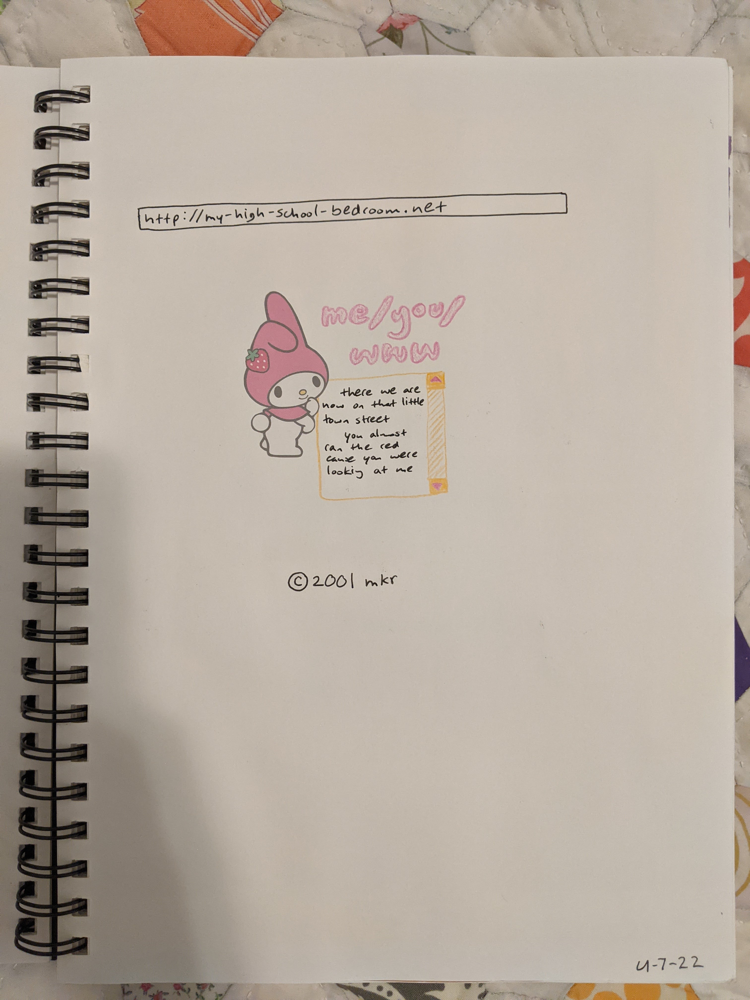
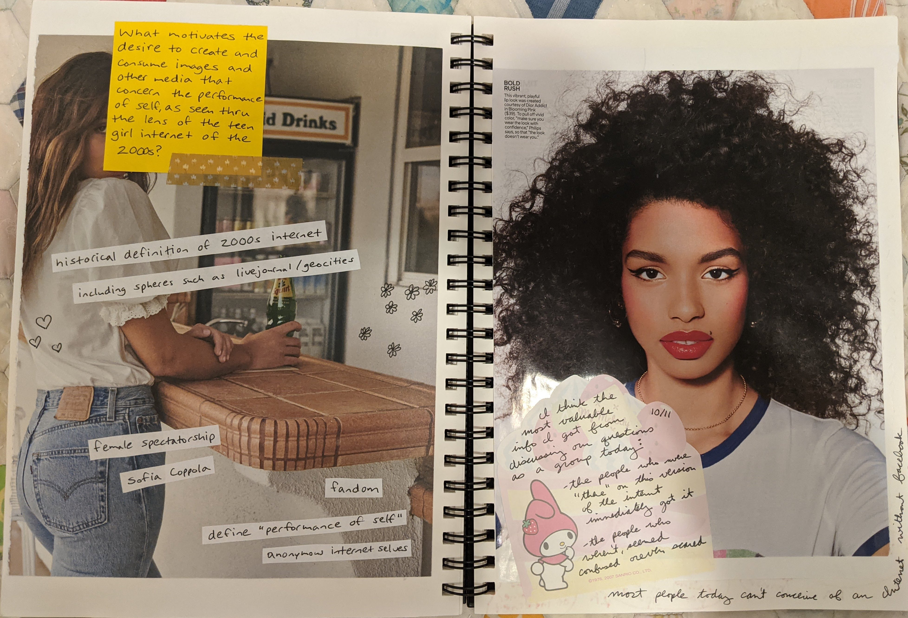
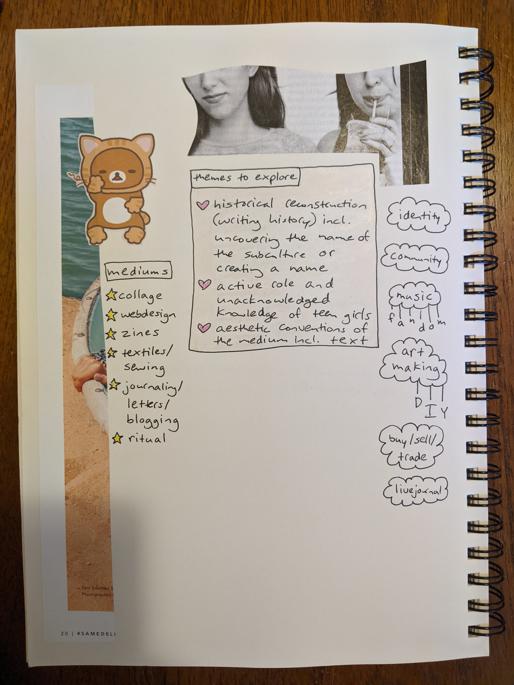

|
as i gathered my thoughts to write my thesis proposal in fall 2022, i made several preliminary collages/art explorations. collage has been an important part of my personal art-making practice in recent years. when i'm working in collage, i work very intuitively, with no preconceived notion of how the work will look when finished. i choose materials and let them do the talking. the approach is similar to webdesign in some ways (at least how i practice webdesign) - two-dimensional, layered, rearranging parts to create meaning.
|



|
SHE'S SO DANGEROUS
dangerous-angels is the research journal for mary reed's MAT thesis project.
read more about the inquiry here.
DOCUMENTATION
♡ t h e s i s ♡ p r o p o s a l
♡ p r e l i m i n a r y ♡ c o l l a g e s
♡ d o c u m e n t ♡ c o l l e c t i o n
DOMAIN INFO
dangerous-angels.net was registered at iwantmyname. it's hosted at ___.
LINK OUT
other people's projects that speak to the historic time period of the teen girl internet of the early 2000s
l a l a l a n d
l o s t m e m o r i e s d o t n e t
|